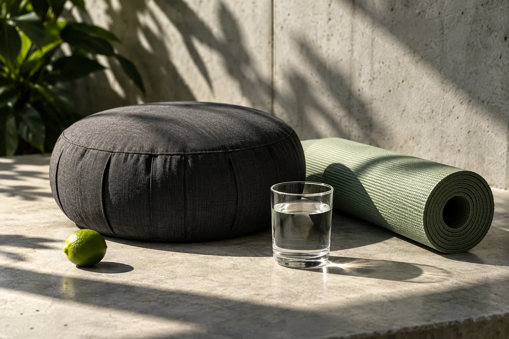

Dale espacio
a tu mente.
Reconoce cómo te sientes y encuentra una pausa en medio del día. Cuidarte también empieza por escucharte.
Respira · conecta · expresa

Reconoce cómo te sientes y encuentra una pausa en medio del día. Cuidarte también empieza por escucharte.
Respira · conecta · expresa
